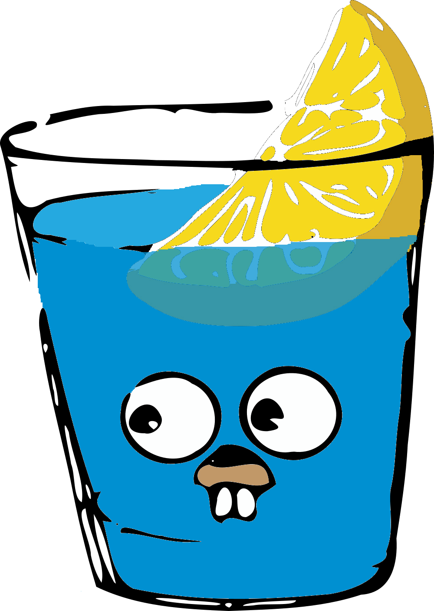
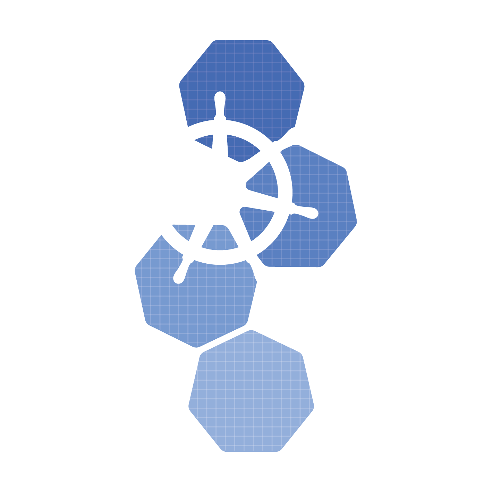

<div style="display: flex; flex-direction: column; gap: 1.1rem; width: 100%; box-sizing: border-box; padding-top: 0.1rem;">
  <div style="font-size: clamp(1.1rem, 2vw, 1.28rem); line-height: 1.52; max-width: min(46em, 96%); opacity: 0.96;">
    The pieces you care about are <strong>ingestor</strong>, <strong>operator</strong>, <strong>streams</strong>, and <strong>Kubernetes</strong> itself — and they’re all written in Go, Well… everywhere.
  </div>

  <div style="display: flex; flex-wrap: wrap; justify-content: center; align-items: center; align-content: center; gap: 0; width: 100%; min-height: min(68vh, 640px); box-sizing: border-box; padding: 0.5rem 1rem;">
    <div style="display: inline-flex; flex-direction: row; align-items: center; gap: clamp(0.35rem, 1.2vw, 0.75rem); transform: rotate(-10deg); margin: clamp(-0.25rem, -0.8vw, 0); position: relative; z-index: 6;">
      
      
    </div>
    
    
    
    
    
    
    
    
  </div>
</div>
